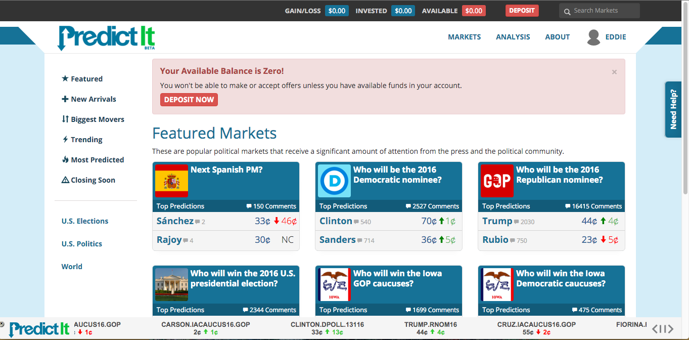
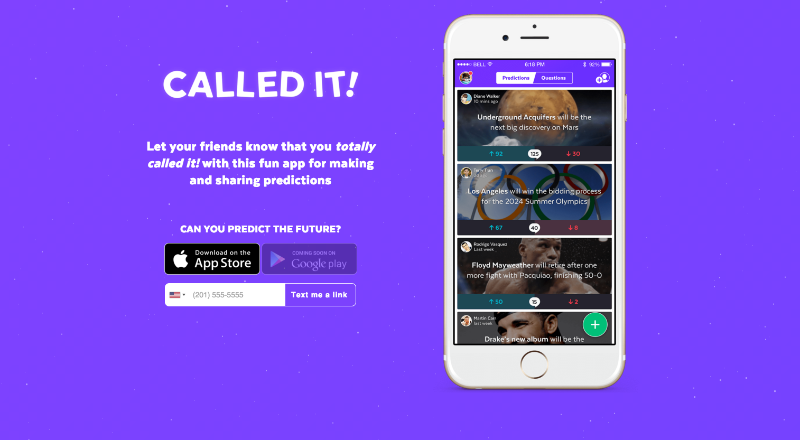
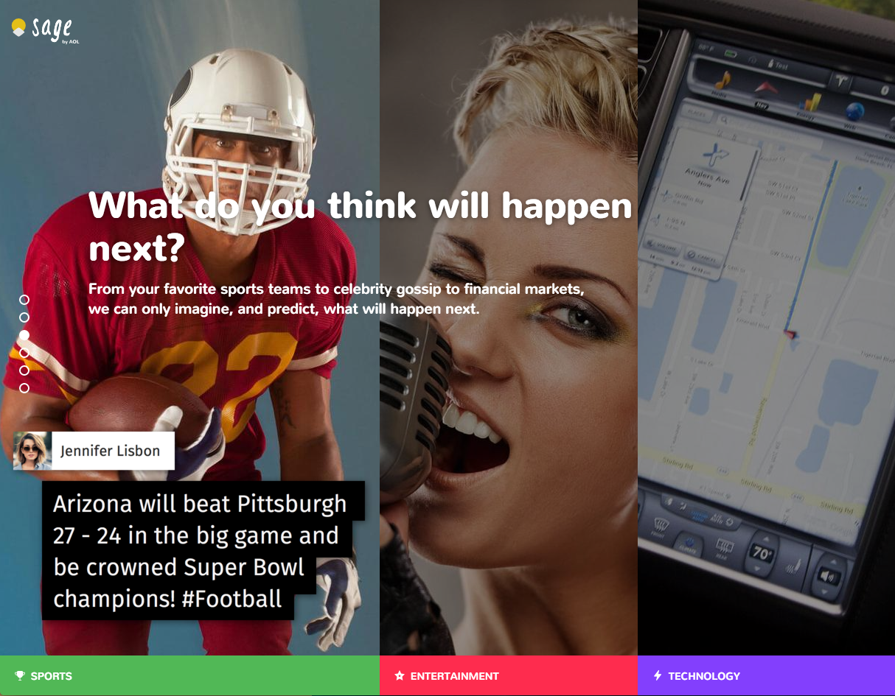

Tea Leaves is a web app I put together with my friend Dan a few months ago.
It invites users to make predictions on world events. We have ideas about how it might be refined or expanded, but haven't what direction it will go in.

The idea first came to me five or six years ago while I was in law school.
I was reading dozens of newspapers from cover to cover and thinking it would be more fun if I could make predictions on the issues I was reading about. After deciding to become a programmer, this seemed like a good app to start with.
Since Dan and I started working on this, a few comparable applications have cropped up.
- 
Predict It, for example, allows users to make predictions on political events, but they are focused on users betting money on outcomes.
- 
- 
Called It and Sage encourage preditions without getting money involved, which I like. But, they embrace any and all postings. This not only leads to predictions on sports and celebrities, which Dan and I are not interested in, but they also lead to users submitting ridiculous predictions just to be funny. Like one Called It user predicted "YOLO will be the leading cause of death in 2016." While I wholeheartedly agree with that prediction, Dan and I don't care to create a forum for that kind of thing.
-
With those thoughts in mind, we started developing Tea Leaves (as in, you can read tea leaves to predict the future).
-
It helped me to appreciate more diverse aspects of application design, development, and operations. Even market analysis and project management.
It is also really fun to think in detail about practical business challenges like trying to develop features that would differentiate our app in the market. And about collaborating with my co-founder throughout the development process.
If you think it's worth it for us to continue building on it, let me know!